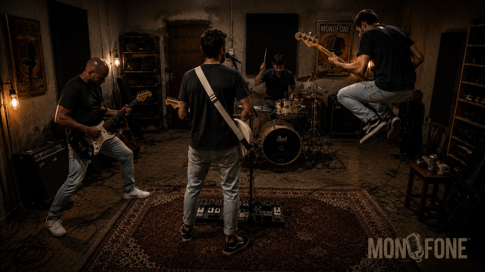

SCROLL ↓01 / MÚSICA
Entre silêncios.
Uma capa provisória para dar forma ao espaço que receberá os lançamentos oficiais.
02 / A BANDA
Som, ideia e presença.
A MONOFONE transforma observações do cotidiano em Rock and roll.
Em meio uma série de fatores que envolvem o Ser humano e suas ações, a banda encontrou uma linguagem própria, transmitido através de um universo que mantém em uma comunicação contemporânea, direta e limpa, muito marcante dentro de suas canções. Formado por quatro amigos (Dario Oliveira, Gilmar Andrade, Gabriel Paixão "Madói" e Rafael Salles) a banda traz em seu rock uma mistura potente de atitude e sentimento.
Este site será nosso ponto de encontro para falarmos de música, vídeos, fotos, agenda e novidades.
03 / AO VIVO
Agenda.
Quando a agenda oficial estiver definida, as datas aparecerão aqui.
04 / CONTATO
Vamos conversar.
Shows, imprensa, parcerias e projetos.
Siga a MONOFONE nos canais oficiais.